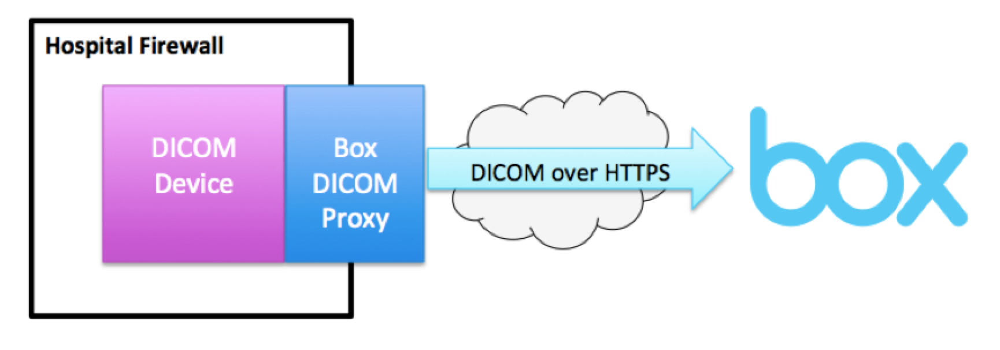

Medical images for the cloud
What is Box DICOM?
Box DICOM is a new feature and a part of the Box Provider Solution. It allows users to store, view and share DICOM files (X-rays, CT scans, Ultrasounds and MRIs) securely in the cloud. This new feature gives users the ability to share imaging studies across healthcare organizations, with patients or with referring physicians. The Box DICOM Viewer allows users to view DICOM files on any web browser or mobile device. This new functionality helps improve interoperability and care coordination in healthcare by securely housing clinical imaging studies in the cloud so they can be viewed and shared at the point of care.

Medical images have long been siloed inside of enterprise-based clinical software systems that work with the imaging equipment that captures them. The cloud can securely bridge the gap between the equipment that radiologists and technicians use to capture data on site and the people they ultimately need to share that data with. Users of the Box DICOM Viewer will be able to take full advantage of the HIPAA-compliant Box file sharing solution and make use of the DICOM Viewer's diagnostic quality capabilities for measurement and annotations. The Box DICOM Viewer has been cleared by the U.S. Food & Drug Administration (FDA) as a Class II Medical Device and is completely browser-based and zero-footprint. This means it requires no additional products or plugins like Java or Flash and uses HTML5 for viewing.
Box DICOM Viewer
The Box DICOM Viewer is an FDA Cleared Class II Medical Device for diagnostic viewing. It is a zero-footprint HTML5 viewer -- no Flash, no Java applets. It is a universal viewer that supports all major modalities. The viewer supports all modern web browsers including iOS and Android.
Try these live demos:
The Box DICOM Viewer can be embedded in your custom applications. It can be embedded in an IFrame or directly with the JavaScript SDK.
<script>
box.dicom.createViewer(document.body, {
'accessToken': 'MY_ACCESS_TOKEN',
'studies': [{
'fileId': 'MY_FILE_ID'
}]
});
</script>
Learn more:
Box DICOM Import
Uploading DICOM to the cloud has never been easier. The Box DICOM Import tool intelligently crawls through folders and subfolders to find your DICOM data. It can recognize non-DICOM to avoid uploading unwanted content such as executables. The resulting files are organized by patient and study details.
The Box DICOM Import widget can be embedded in your custom applications using the JavaScript SDK.
<script>
box.dicom.createImportWidget('my-container', {
'accessToken': 'MY_ACCESS_TOKEN',
'folderId': 'MY_FOLDER_ID'
});
</script>
Learn more:
Box DICOM Proxy
Box also offers the Box DICOM Proxy, an on-premise application that securley uploads protected DICOM data to Box, directly from a hospital or medical group's PACS. The Box DICOM Proxy allows users to send DICOM files over the Internet without the need for a Virtual Private Network (VPN).
DICOM (Digital Imaging and Communications in Medicine) is the standard for handling, storing, printing, and transmitting information in medical imaging. Many DICOM devices do not natively support secure encryption. Therefore, many providers create a VPN tunnel between their local and remote networks. Unfortunately, VPN's have several problems that make them less desirable:
- High setup costs
- High maintenance costs
- Fragile and unreliable
By using the Box DICOM Proxy, you eliminate the need for a VPN to transfer or share DICOM files. The following diagram demonstrates how the Box DICOM Proxy securely transmits DICOM files from a hospital or medial group’s PACS to Box:

Learn more:
Contact
For pricing please get in touch with your Box Account Executive or email dicom-sales@box.com or call us at 1.877.729.4269.